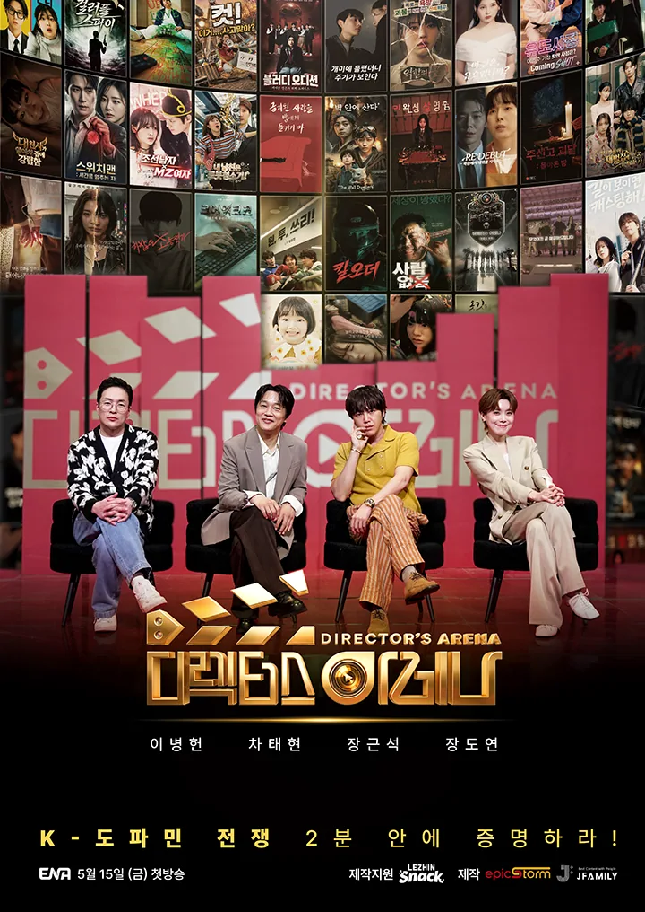
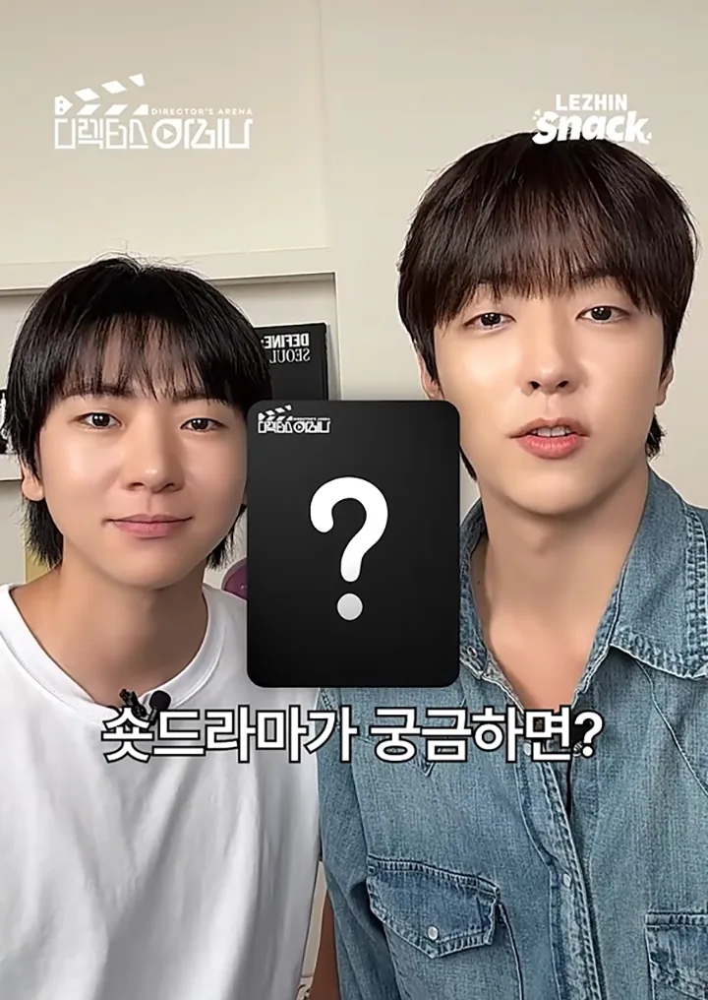
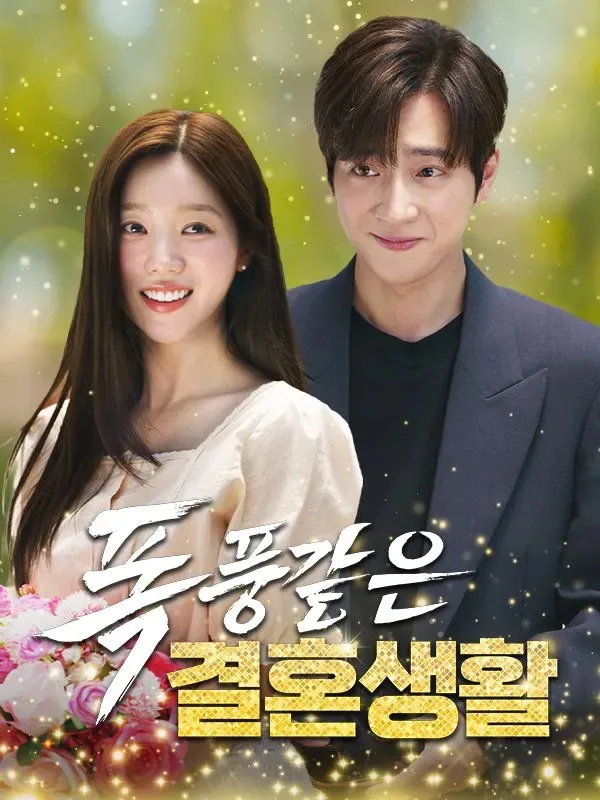
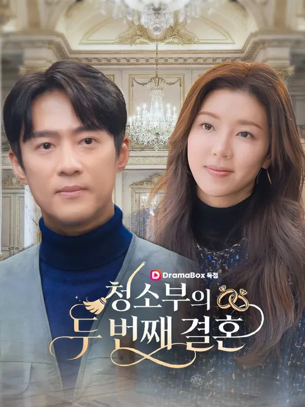
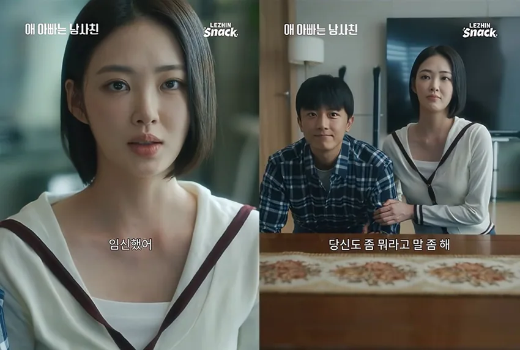
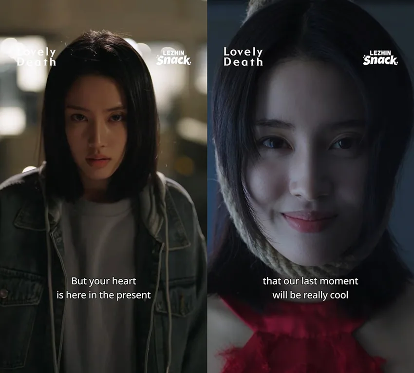
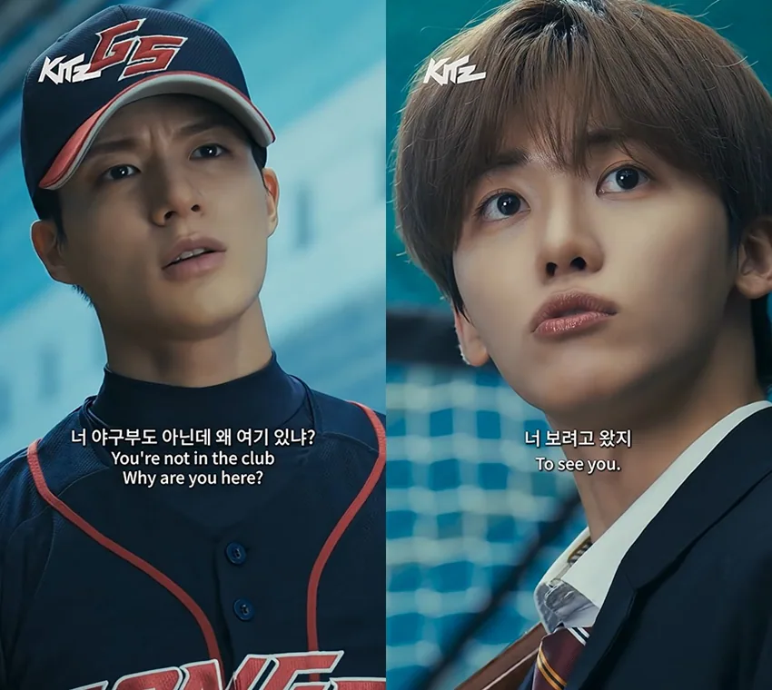
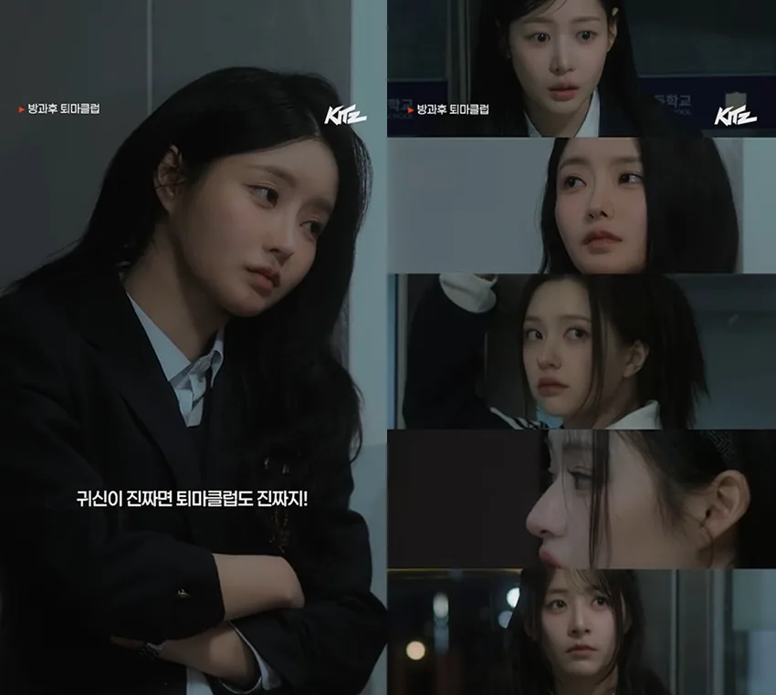

최근 숏폼 드라마(줄여서 ‘숏드’)가 심상치 않다.1) 지난 5월에 <디렉터스 아레나>(ENA)라는 예능 프로그램에서 숏드의 서바이벌이 이뤄졌다. 이 프로그램은 숏드를 “한국 콘텐츠 시장의 새로운 지평”으로 평가하며 2분 안에 관객의 시선을 끌 수 있는 숏드의 경쟁을 보여 주었다. 지상파 예능인 <놀면 뭐하니?>(MBC)도 역시 지난 5월 이후 ‘숏드라마 프로젝트’를 통해 숏드를 촬영하는 현장을 콘셉트로 예능 프로그램을 만들어 냈다. 지난 7월 12일 폐막한 부천국제판타스틱영화제는 ‘플랫폼 기획전: 숏폼 시네마’라는 이름으로 네 편의 숏드를 극장에서 상영했다. 이준익 감독의 <아버지의 집밥>과 이원석 감독의 <사랑하는 죽음>은 장편으로 편집된 세로 버전으로, 김성호 감독의 <와인드업: 더 무비>와 정주 감독의 <방과후 퇴마클럽: 소녀들의 밤>은 가로 버전으로 상영되었다. 씨네플레이와 한국영상자료원은 오는 8월 29일 ‘코리아 숏드라마 어워즈’를 여는데, 회당 1~3분이며 최소 7회 이상의 숏드가 대상이다. 전주국제단편영화제는 세로로 제작된 20분 이하 러닝타임의 단편을 대상으로 하는 ‘SERO본능’ 공모전을 열었고, 수상작을 오는 9월 영화제 기간에 상영한다.
한국의 숏드 산업은 2026년에 어떤 분기점을 맞이하고 있는 듯하다. 한국의 영상산업에서 숏드는 가장 최근에 등장한 뉴미디어라고 할 수 있으며, 극장 개봉 시장이나 온라인동영상플랫폼(이하 OTT) 등과 함께 중요한 시장을 이루고 있다.2) 성장세는 놀랍다. 2023년 150억 원 정도였던 국내 매출 규모는 현재 6천500억 원으로 추산되고 있다. 특히 2026년에는 양적 성장과 함께 질적 변화를 이루고 있으며, 특화된 관객들을 위한 서브컬처가 아니라 공적인 영역에서 다뤄지는 문화로 인식되기 시작했다. 기존의 영화감독들도 대거 숏드로 진출했으며, 치정 로맨스 일색이던 장르도 드라마, 코미디, 호러, 스릴러 등으로 다양화되었다. 어느덧, 아니 어쩌면 이미 숏드는 영상산업의 메인스트림으로 진입했으며 2026년은 그 징후가 역력한 한 해인 셈이다.
1) 숏폼 드라마는 짧은 러닝타임을 지닌 드라마를 의미하는데, 이 지면에선 1회당 2분 30초를 넘지 않는 분량인 단편이 약 50~80회 정도 이어지는, 스마트폰의 세로 화면을 통해 서비스되는 콘텐츠를 의미한다.
2) 센서타워(https://sensortower.com/ko) 리포트 참조.


국내 최초 숏드 서바이벌 예능 <디렉터스 아레나>(왼쪽)와 이 프로그램을 통해 숏드 감독으로 변신한 배우 이주승, 이유진
(제공=레진엔터테인먼트, 레진스낵 유튜브 캡처)
국내 최초 숏드 서바이벌 예능 <디렉터스 아레나>(위)와 이 프로그램을 통해 숏드 감독으로 변신한 배우 이주승, 이유진
(제공=레진엔터테인먼트, 레진스낵 유튜브 캡처)
중국: 숏드의 종주국
숏드의 시작은 중국이었다. 웨이돤쥐(微短劇)로 불리는 숏드는 2018년 즈음에 본격적으로 등장했다. 팬데믹 기간 동안 급성장했고 2024년엔 504억 4천만 위안의 매출을 기록하며 영화 매출(470억 위안)을 넘어섰다.3) 일시적인 유행이던 시절은 이미 지났으며, 중국 영상산업의 중심은 단연코 숏드라고 할 수 있다. 아시아 지역의 엔터테인먼트 시장에 대한 연구 및 컨설팅 업체 미디어 파트너스 아시아(Media Partners Asia, MPA)의 이그제큐티브 디렉터인 비벡 쿠토는 “현재 숏드의 핵심은 규모와 구조에 있다. 그것은 소셜 미디어와 스트리밍 서비스 사이에 자리 잡은 새로운 엔터테인먼트 및 수익 창출 방식”이라고 말한다.4) 중국 시장에서 숏드는 이미 영화와의 경쟁은 끝냈으며, 글로벌 엔터테인먼트 시장에서 뉴미디어 산업으로서 자리매김하기 위해 전략을 짜고 있는 상황이다. 이러한 위용은 올해 3월 홍콩에서 열린 30회 필마트(Hong Kong International Film & TV Market, 홍콩무역발전국(HKTDC) 주최)에서도 잘 드러났다. 부스의 6분의 1은 모두 중화권의 숏드 관련 업체가 차지하고 있었으며, 중국의 COL 그룹이나 싱가포르의 세로형 숏폼 드라마 OTT 플랫폼 드라마박스 같은 대표적 기업과 함께 국제숏폼드라마협회가 파빌리온을 설치했다.5) “숏드가 대세”임을 확연히 보여 주는 광경이었다.
현재 중국과 글로벌 마켓의 숏드 산업에 대해 아시아 미디어 및 엔터테인먼트 기업 AR Asia 프로덕션의 COO 로난 웡은 “세 번째 진화”라는 표현을 사용한다. 1단계 진화는 2021년에 시작되었는데 약 4년 동안 중국의 숏드 내수 시장은 70억 달러까지 성장했다. 2단계 진화는 중국의 숏드가 국경을 넘어 북미 시장으로 확장되어 40억 달러 규모까지 매출을 거둔 단계다. 로난 웡은 이 단계를 거치며 “스토리텔링이 성공의 열쇠이며 언어적 장벽은 중요하지 않다”는 교훈을 얻었다고 말한다. 그리고 현재 맞이한 3단계의 시기엔 전 세계의 주요 영상 제작 국가들이 자국의 고유한 문화와 지역적 특성을 반영한 콘텐츠를 제작하고 있다. 중국의 숏드가 자극적 소재를 이용한 ‘마라맛’이라면, 한국의 숏드는 웹툰 등을 기반으로 다양한 장르에 포진되어 있으며 이야기의 개연성을 중시하는 편이다.
3) 이성민, ‘숏폼 드라마의 성장이 던지는 과제’, 전자신문, 2026.06.01.
4) Naman Ramachandra, ‘The Vertical Revolution: How Microdramas Became a Multi-Billion Dollar Global Phenomenon’, Variety, 2025.11.13.
5) 정재현, ‘인공지능, 숏폼 그리고 대한민국 - 정재현 기자의 제30회 필마트 참관기’, 씨네21, 2026.04.02.
전체적 규모로는 중국 숏드 시장이 가장 크지만, 중국에선 구글 플레이 스토어가 서비스되지 않고 위챗페이 같은 소액 결제 시스템의 비중이 큰 이유로, 인앱 결제를 기준으로 할 경우 숏드 매출 순위는 미국과 일본이 가장 크다. 일본의 숏드는 자국의 영화적 전통 위에서 학원 드라마, 서스펜스와 호러, 불륜 스릴러 등을 선보이고 있다. 동남아시아도 중요한 시장으로 부상하고 있는데, 특히 태국은 OTT와 모바일을 모두 플랫폼으로 삼아 숏드를 배포하면서 구독자를 확보하고 광고 수익을 거두는 전략을 사용하고 있다.
중국에 의해 시작된 숏드의 트렌드는 현재 전 세계를 휩쓸고 있으며, 종주국인 중국 내에선 여전히 변화의 바람이 불고 있다. 우리가 ‘중국산 숏드’에 대해 가지고 있는 고정 관념, 즉 사이다 같은 상황을 통해 카타르시스를 주고, 불륜이나 치정의 플롯을 적극 활용하며, 다양한 판타지 장치를 사용하는, 그리고 결정적 순간에 끊어 결제를 요구하는 ‘클리프행어’ 방식 등은 초창기 숏드의 문법이었다. 하지만 최근 중국은 40만~60만 달러의 예산으로 제작되며 영화적인 영상미와 준수한 연기력을 보여 주는 배우를 지닌 S급 숏드를 시도하며 시장을 확장하고 있다. 이것은 난립하던 제작 환경이 정리되고 공식적인 유통 구조가 정착되면서, 규모 있는 미디어 그룹이 대거 참여해 작품의 퀄리티를 높인 결과다. 아울러 중국의 최고 심의 기관인 국가광전총국은 저급하고 과하게 자극적인 소재를 단속하고 있다.
기술적 확장도 중요한 변화인데, 그 중심엔 AI 테크놀로지가 있다. 여기서 중국의 IT 기업인 바이트댄스의 역할이 매우 중요하다. 틱톡(TikTok)을 서비스하고 있는 바이트댄스는 2025년 영상 생성 AI인 시댄스(Seedance)를 출시했고, 2026년엔 시댄스 2.0을 내놓았다. 시댄스의 등장으로 실사 촬영 없이 AI 기술만으로 만들어진 영상이 쏟아져 나오게 되었는데, 이러한 현상의 가장 큰 영향을 받는 산업이 바로 숏드다. AI의 등장으로 제작비는 심하면 10% 수준으로 줄어들 수 있게 되었고, 몇 주 걸리던 제작 기간도 일주일 이내로 단축되었다. 그 결과 하루에도 수백 편의 AI 숏드가 나올 수 있는 상황이 조성되었다. 이러한 변화는 중국 내 시장에 머물지 않고, 글로벌 마켓에 큰 영향을 미치고 있다. 올해 세로형 숏드라마 전문 스트리밍 플랫폼인 레진스낵을 론칭하며 한국 숏드 산업의 중요한 구성원이 된 키다리스튜디오의 정재욱 본부장은 숏드 산업의 미래를 이렇게 전망한다. “AI 숏드가 화두가 되고 있다. 일반 숏드 제작비의 3분의 1로 만들 수 있기에 모든 플랫폼이 AI 숏드로 물량을 채우려 할 것이다. 한 달에 4만 개의 신작이 쏟아져 나온다고 할 정도다.” 현재 AI 기술은 숏드 산업의 미래를 이야기할 때 가장 중요한 요인이 되었으며, 제작자들에겐 획일화되지 않고 차별화된 숏드를 만들어 내는 과제가 무겁게 던져졌다.


이상엽이 출연한 <폭풍같은 결혼생활>(왼쪽), 고주원과 박한별 주연의 <청소부의 두 번째 결혼> 등 드라마박스는 기존 드라마에서 연기력을 입증한 배우들을 섭외해 숏드의 퀄리티를 높이고 있다
(제공=드라마박스 홈페이지 캡처)
이상엽이 출연한 <폭풍같은 결혼생활>(위), 고주원과 박한별 주연의 <청소부의 두 번째 결혼> 등 드라마박스는 기존 드라마에서 연기력을 입증한 배우들을 섭외해 숏드의 퀄리티를 높이고 있다
(제공=드라마박스 홈페이지 캡처)
미국: 높은 수익성과 성장 가능성
할리우드는 숏드와 관련된 아픈 기억이 있다. 드림웍스 공동 창립자였던 제프리 카젠버그는 2020년 모바일 시장에 어울리는 10분 미만의 콘텐츠를 제공하는 모바일 전용 숏폼 스트리밍 서비스 플랫폼 퀴비(Quibi)를 만들었지만, 6개월 만에 10억 달러가 넘는 투자금을 날리고 서비스를 접어야 했다. 목표 구독자는 700만 명이었지만 실제적으로는 100만 명에 못 미쳤다. 퀴비의 실패는 유료 플랫폼이 유튜브나 틱톡 같은 무료 플랫폼과 경쟁할 때 패배할 수밖에 없는 사례처럼 여겨졌다. 하지만 2023년 이후 폭스 엔터테인먼트 등의 메이저 스튜디오나 유명 크리에이터 등이 뛰어들며 현지화된 숏드 제작이 활성화되고 있다. 올해만 해도 부동산 자본에 의해 필몰로지 랩스(Filmology Labs)가 만들어졌고, 풋웨어 업체인 크록스는 글로벌 에이전시 CAA(Creative Artists Agency)와 함께 엔터테인먼트 산업에 뛰어들며 숏드를 선택했다. 얼마 전까지만 해도 OTT에 자본이 몰리던 상황과 비교하면 급격한 변화라고 할 수 있다. 엔터테인먼트 업체인 레인지 미디어 파트너스와 구글의 콘텐츠 제작 프로젝트 100 제로스(100 Zeros)는 함께 마이크로드라마 이니셔티브(Microdramas Initiative)를 출범시켰다. 이외에도 할리우드 산업 뉴스에는 매달 업계 거물들의 숏드 프로덕션 창업 소식이 등장하고 있다.
이것은 물론 산업적 가능성 때문이다. 미국은 중국 외 지역에서 가장 수익성이 높은 숏드 시장으로 부상했다. 숏드 매출액이 극장 매출액을 역전한 중국과는 달리 아직 극장 매출의 15~18% 정도지만, 미국에서 상영관을 중심으로 한 영화산업이 답보 상태인 것에 비해 숏드 시장은 매년 30% 이상 성장하고 있다. 드라마박스나 릴숏 같은 플랫폼이 주도하고 있는 미국 숏드 시장의 주 시청자는 30~60대의 여성으로, 로맨스나 복수극 혹은 부자들의 성공 스토리 등이 사랑받고 있다. 고무적인 것은 최근 캘리포니아에서 세로형 숏폼 드라마 제작에 대한 세제 혜택과 보조금 지원을 시작했다는 것이다. 이것은 짧은 기간 안에 숏드가 메인스트림 안으로 편입되었음을 의미한다.
미국의 숏드 산업 역시 AI의 영향을 받고 있다. AI는 프로덕션뿐만 아니라 플랫폼 내에서의 콘텐츠 추천, 장르 분류, 바이럴 마케팅, 다른 언어의 더빙 등 다양한 분야에서 사용되고 있는데, 폭스 엔터테인먼트가 2025년에 인수한 프로덕션 홀리워터(Holywater)는 AI를 통해 제작 전 단계에서 아이디어 테스트 및 완성될 장면에 대한 관객 반응을 예상해 작업한다. 시뮬레이션을 통해 일종의 파일럿을 만들어 보는 셈이다. 이처럼 글로벌 시장의 숏드 콘텐츠는 등장한 지 10년도 채 안 되었지만, 기술적 발전과 사업적 전략을 통해 처음과는 꽤 다른 모습으로 진화하고 있으며 현재 가장 빠른 속도로 마켓을 확장하고 있는 미디어로 평가받고 있다.
한국: K-숏드의 가능성
한국의 미디어 전통에서 숏드를 이야기하려면, 먼저 웹드라마를 언급해야 한다. 인터넷과 스마트폰의 영향으로 나타난 서사의 가장 큰 변화는 러닝타임의 축소였고, 2010년대 중반에 등장한 웹드라마는 대표적인 방식이었다. 전통적인 TV 드라마의 형식성을 파괴하고, 좀 더 가볍고 트렌디한 콘텐츠의 등장이었다. 윤성호 감독의 웹드라마 <출중한 여자>(2014)가 좋은 예다. 5부작으로 구성된, 편당 러닝타임이 10여 분이었던 드라마였다. 이후 웹드라마는 편수와 편당 러닝타임의 자유로운 변주를 통해 다양한 테마를 담아냈는데, 안타깝게도 시장에선 살아남지 못했다. 무료로 공개하고 PPL 등의 광고를 기반으로 제작비를 조달하는 시스템은 자본의 선순환 구조를 만들지 못했기 때문에 결국 OTT 시리즈에게 주도권을 내어 주게 됐다.
여기까지가 한국에서 제작된 숏드의 1기라면, 최근 2~3년 동안 2기가 시작된 셈이다. 세로형 숏폼 드라마라고 할 수 있는 현재의 숏드는 영어로는 마이크로드라마(microdramas)로 번역되는 것으로, 플랫폼을 통한 과금 체제로 운영된다. 그러기에 웹드라마에 비해 훨씬 더 탄탄한 토대를 지니고 있으며, 짧은 러닝타임과 세로 화면으로 인한 서사와 비주얼의 한계는 오히려 새로운 영상 문법을 만들어 냈다. 초기엔 중국을 모델로 삼았고, 2024년부터는 탑릴스나 비글루 같은 한국의 숏드 플랫폼이 등장하기 시작했다. 물론 이 당시엔 이미 드라마박스나 릴숏 같은 중화권 플랫폼이 글로벌 숏드 시장의 중심을 차지한 상황이었다.
이후 한국식 숏드에 대한 시도가 등장했는데, 2026년은 그 원년이라 할 수 있을 것이다. 레진스낵이 대표적이다. 레진코믹스로 유명한 레진엔터테인먼트를 자회사로 둔 키다리스튜디오는 자체 플랫폼 레진스낵을 출범해 매달 4편씩의 숏드 작품을 선보이고 있다. 제작비는 평균적으로 1억 원에서 2억 원 사이, 촬영 회차는 10회 이하가 대부분이다. 레진스낵 숏드의 가장 큰 특징은 검증된 원작을 IP로 소유하고 있으며, 여기에 검증된 제작 역량이 결합한다는 점이다. 레진스낵의 작품들은 영화나 드라마 연출 경력이 있는 감독들이 주로 메가폰을 잡고 있는데, <극한직업>(2019)의 이병헌 감독이 연출한 <애 아빠는 남사친>을 비롯해 이원석 감독의 <사랑하는 죽음>, 이준익 감독의 <아버지의 집밥> 등이 대표적으로 이들의 경험과 연출력으로 차별화된 숏드를 제작할 수 있었다. 연출자가 레진스낵이 보유한 수많은 IP에서 작품을 고른 후 숏드로 만들 수 있는 시스템은 장르의 다양화를 가져왔고, 하드고어 호러부터 뭉클한 가족 드라마까지 다양한 스펙트럼의 숏드가 만들어질 수 있었다.


이병헌 감독의 <애 아빠는 남사친>(위)과 이원석 감독의 <사랑하는 죽음>.
레진스낵은 영화감독들의 탄탄한 연출력을 바탕으로 숏드를 제작하고 있다
(제공=레진스낵 유튜브, BIFAN 유튜브 캡처)
한편 국내의 또 다른 종합 콘텐츠 회사 테이크원컴퍼니의 자회사 테이크원스튜디오는 아이돌을 기용한 숏드를 제작한다. 아이돌 그룹 NCT의 제노와 재민이 출연하는 <와인드업>은 테이크원스튜디오의 글로벌 케이팝 숏폼 플랫폼 킷츠(KITZ)를 통해 큰 인기를 끌었는데, 이후 가로 버전으로 재편집돼 <와인드업: 더 무비>로 극장에서도 상영되었다. 사실 연출자에게 이런 작업이 쉽지만은 않은 과정이었다. 연출을 맡은 김성호 감독은 가로로 촬영한 후 양쪽을 잘라내는 크로핑을 통해서 세로 화면을 구현했는데, 촬영 자체는 세로 버전에 최적화된 앵글을 구사하고 그에 걸맞은 프로덕션을 해서 가로로 촬영한 화면이었다. 이렇게 애초에 세로를 염두에 두고 기획된 화면을 극장 개봉을 위해 다시 가로로 만들 때는 화면이 비어 보이는 난점이 드러나기도 한다. 그럼에도 불구하고 이러한 원 소스 멀티 유즈 전략이 산업적으로 의미 있는 이유는 모바일과 영화관을 오가며, 세로와 가로를 오가며, 팬덤을 기반으로 한 시장을 공략할 수 있다는 점이다. <와인드업: 더 무비>는 올해 베를린국제영화제 마켓인 유럽필름마켓(European Film Market, EFM)에서도 예상외의 성과를 거두었다. 아이돌 걸그룹 피프티피프티의 숏폼 드라마 <방과후 퇴마클럽>의 극장판인 <방과후 퇴마클럽: 소녀들의 밤>도 같은 전략으로 제작되었다.
기존의 영화 기업들도 숏드 시장에 뛰어들고 있다. 가장 대표적인 곳은 쇼박스다. 결정의 근거는 관객성의 변화다. 시청자들은 점점 짧고 몰입도 높은 영상을 원한다. 이런 상황에서 숏드는 영화의 축소판이 아니라 독자적이며 새로운 콘텐츠로 인식되고 있다. 글로벌 비즈니스에 상대적으로 용이하고, 새로운 감독이나 배우를 발굴하는 계기가 될 수도 있다는 점도 숏드를 시도한 중요한 요인이었다. 이외에도 여러 업체들이 각자의 판단과 이해관계 속에서 숏드 산업에 진출하고 있는 상황이다.


NCT 제노, 재민 주연의 <와인드업>(위)과 피프티피프티가 출연한 <방과후 퇴마클럽>.
킷츠는 아이돌 팬덤을 통해 글로벌 시장을 노리고 있다(제공=킷츠 유튜브 캡처)
NCT 제노, 재민 주연의 <와인드업>(위)과 피프티피프티가 출연한
<방과후 퇴마클럽>.
킷츠는 아이돌 팬덤을 통해 글로벌 시장을 노리고 있다
(제공=킷츠 유튜브 캡처)
<와인드업> 오피셜 트레일러
결국 ‘이야기’로 승부하면 유리하다
물론 현재 한국의 숏드 산업은 문제점 역시 지니고 있다. 저예산 구조와 빠듯한 제작 일정, 여전히 방만하게 반복되는 클리셰, 공장처럼 찍어내는 시스템 등은 쉽게 해결되지 않을 부분이다. 그럼에도 숏드 시장에 자본과 인력이 몰리고 있는 것은 이 시장의 성장 가능성에 대한 확신 때문이며, 현재는 그 단계를 넘어 지속 가능한 사업 구조를 구축하는 것이 중요한 단계에 와 있다. 초창기엔 자극성으로 승부했지만, 이제 숏드도 장르적 다양성과 높은 완성도 없이는 차별화될 수 없는 상황이 되었다. 최근 한국의 숏드들이 시도하고 있는 IP 전략이나 아이돌의 숏드 진출 그리고 기존의 숙련된 영화 및 드라마 연출자들의 숏드 진출 등은 이른바 ‘K-숏드’의 차이를 만들기 위한 시도라 할 수 있다. 그리고 결국 모든 것은 ‘이야기’로 회귀한다. 키다리스튜디오의 정재욱 본부장은 “결국 승부처는 ‘재미있는 콘셉트와 스토리를 가진 작품’ 그 자체로 돌아올 것”이라며, 그런 면에서 “한국은 유리한 위치에 있다”고 말한다. 우리에겐 이미 스토리가 검증된 다수의 웹툰과 웹소설이 있기 때문이다.
숏드는 한국 영화산업의 변이가 아니다. 극장 산업과 공존할 수 있는 또 하나의 시장이며, 크리에이티브를 공유하며 서로를 보완할 수 있는 파트너가 될 수도 있다. 글로벌 시장을 겨냥한다는 점에서는 타깃이 같다고도 할 수 있다. 물론 숏드가 지속 가능한 장르인지, 과도기적 형식인지, 아직 확고한 판단을 내리기는 힘들다. 다만, 대중의 취향과 관심사는 끊임없이 변하고 있으며, 그 결과 ‘세로 혁명’이 당분간 계속될 것이라는 건 부정할 수 없다.